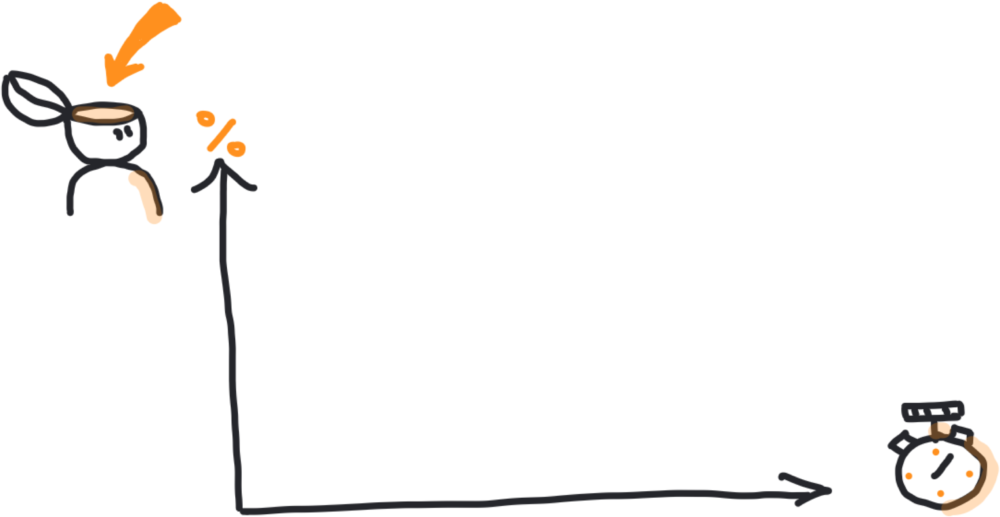
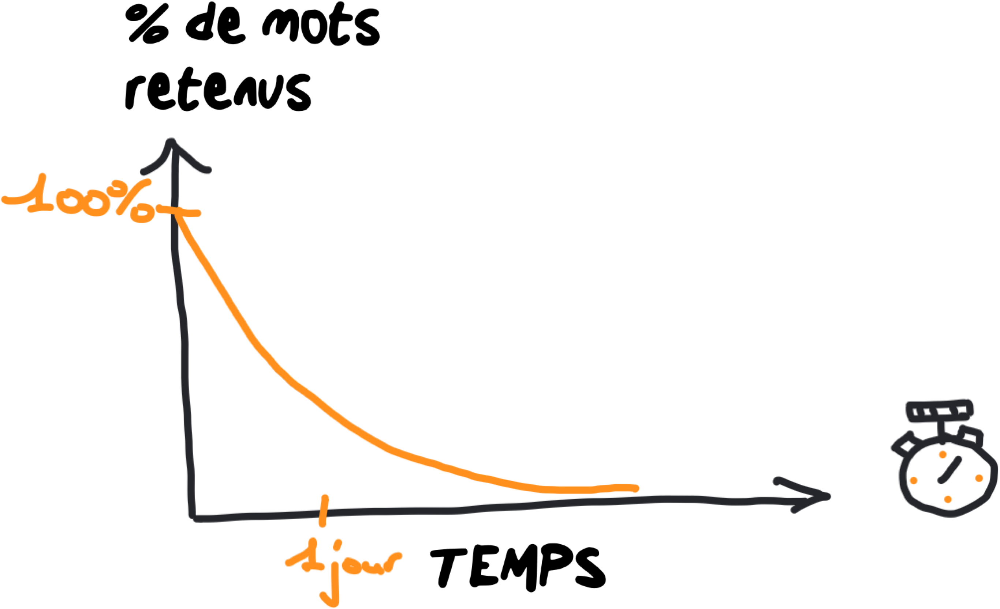
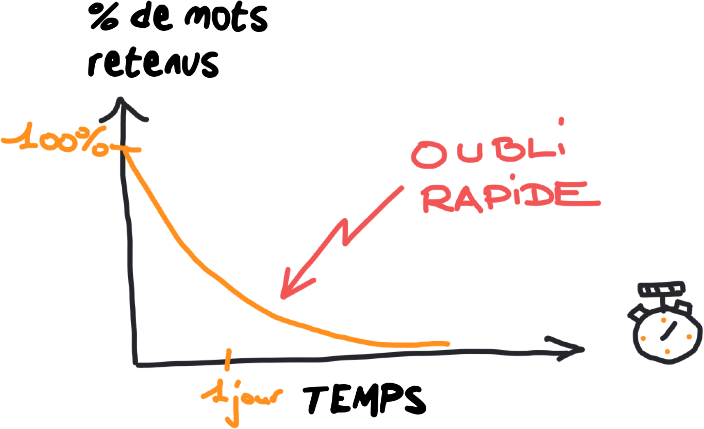
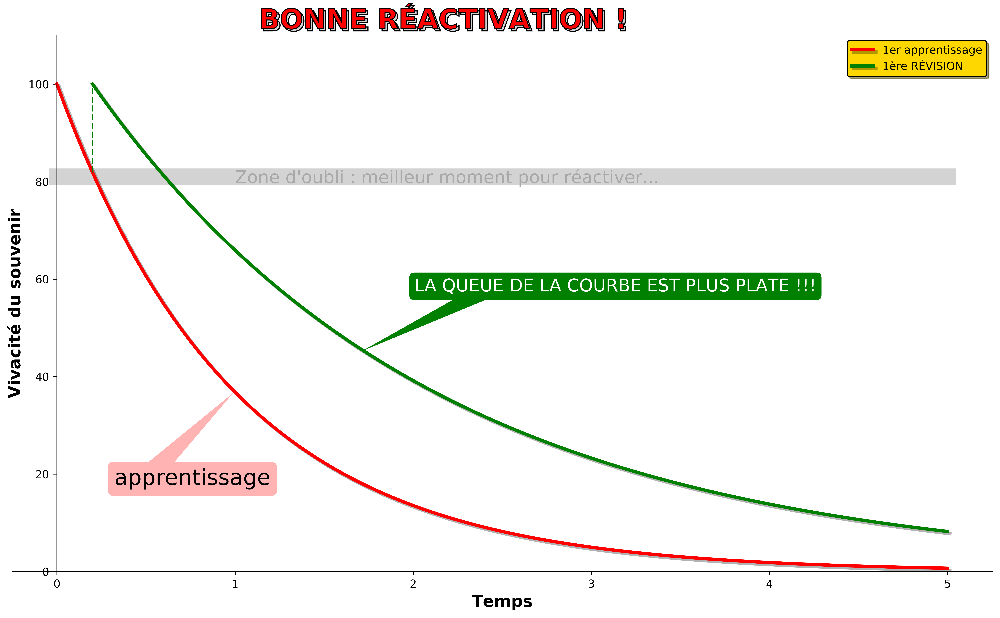
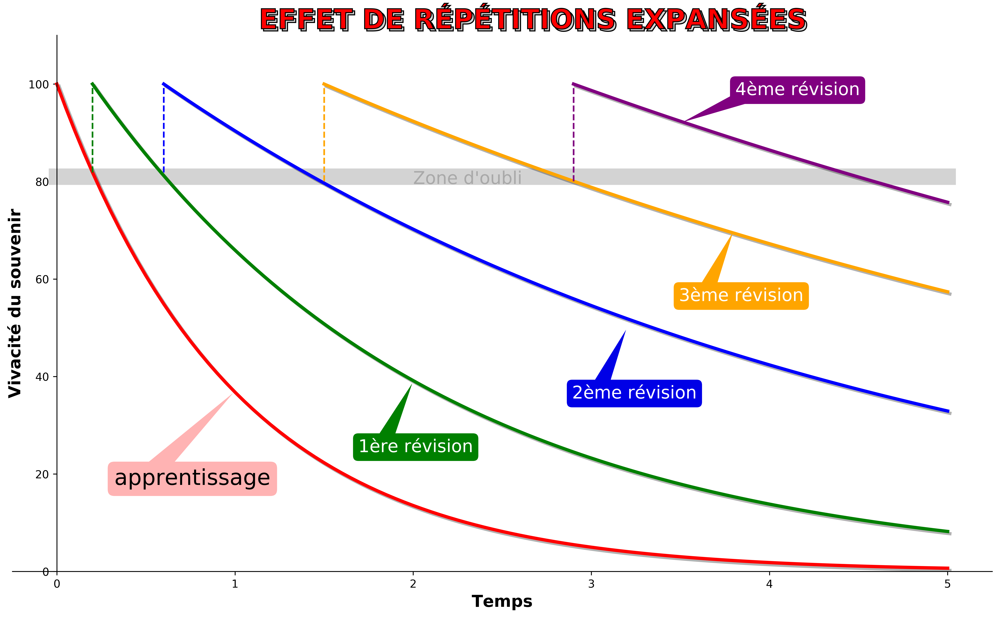
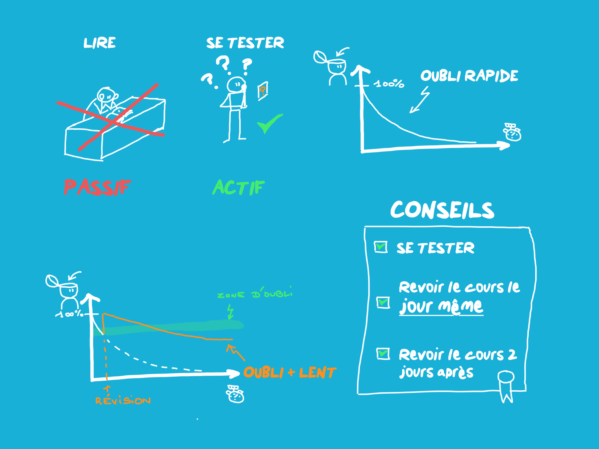

(ou pourquoi on oublie et comment ne plus oublier...)
O
U
B
L
I
INTRODUCTION
Ceci est ma cinquième Séance.
En 1885, Hermann Ebbinghaus se livra à la première étude scientifique
sur la mémoire. En effet, depuis l'Antiquité, les philosophes grecques débattaient
sur la mémoire mais Ebbinghaus fut le premier
à faire de véritables expériences (qui ont été répliquées). Il voulait
vérifier s'il retenait une information et savoir au bout de combien de temps
il oubliait cette information. Comme il était évident
que l'on retient mieux une information que l'on peut associer à quelque chose de connu,
le psychologue allemand choisit de mémoriser des milliers de mots dénués de sens !
Cela lui permettait d'avoir une information la plus NEUTRE possible : il ne pouvait
pas jouer sur le sens ni sur ce qu'il connaissait déjà (accessoirement, cela rendait
l'information beaucoup plus difficile à retenir).
Son acte de masochisme ne s'arrêta pas là ! Il prit soin de mesurer le temps au bout
duquel son souvenir de l'information se dégradait (c'est à dire quand l'information
est oubliée). Ensuite, pour se rendre compte de la vitesse à laquelle il oubliait
l'information, il a tracé selon un axe vertical le pourcentage d'informations retenues.
et selon un axe horizontal, la durée après la 1ère exposition à l'information.
Et il a découvert ce que l'on appelle la "Courbe de l'Oubli" :
On voit sur cette courbe que l'oubli est très rapide ou pour le dire autrement,
que la dégradation du souvenir est très rapide : en gros, au bout d'une journée
sans revoir l'information, nous oublions déjà 70% de l'information !
Ici, j'aimerais revenir sur ce que j'avais appelé "effet Sisyphe" dans la séance
précédente. vous avez appris votre cours, vous le connaissez bien et,
une semaine après, vous vous rendez compte que vous en avez déjà oublié
une grande partie ! C'est d'autant plus rageant que votre cerveau,
lui, se rappelle bien des efforts que vous avez dû déployer et de la peine subie
pendant l'apprentissage de votre cours !
En ce qui me concerne, j'ai vécu cette situation des centaines de fois ! Cette situation
s'explique bien à l'aide de cette courbe de l'oubli :
Effet Sisyphe
Lorsque vous essayez de revoir votre cours (1ère révision), vous avez déjà presque totalement
oublié ! Donc, vous êtes obligé de refournir quasiment les mêmes efforts que lors de votre
1er apprentissage ! Comme ce héros de la mythologie grecque, condamné à pousser le même rocher
éternellement !
SE TESTER PLUTÔT QUE D'ÉTUDIER
Depuis les travaux de..., on sait qu'il est beaucoup plus efficace, pour retenir un cours
de privilégier le questionnement actif plutôt que "d'étudier" son cours. Je sais, cela
peut vous étonner ! Mais avant que vous ne réagissiez, je vais préciser ce que je veux
dire par là. Par exemple, vous avez lu la 1ère partie de cette page Web. "Étudier" cette
première partie serait de relire la première partie en se demandant si vous avez bien
compris chaque passage. L’immense majorité des élèves apprennent leur cours en le lisant
et le relisant, ou
en fabriquant des petites fiches de révision contenant les points essentiels sans
pour autant s’interroger. Il y a plusieurs problèmes lorsqu'un élève fait cela :
Parce que le texte lui paraît familier, il a l'impression (fausse) de l'avoir retenu.
Comprendre n'est pas suffisant pour dire que l'on a retenu l'information à long terme.
Pourquoi est-il nettement plus efficace de se poser des questions pour mieux retenir,
plutôt que de simplement lire et relire, écouter ou observer ? La réponse tient
essentiellement à deux arguments :
Tout d’abord, le cerveau est naturellement conçu pour apprendre en se questionnant,
c’est la théorie du cerveau
prédictif et probabiliste. Il part de modèles mentaux acquis en mémoire,
pose des hypothèses, obtient des réponses
et ajuste les erreurs de prédiction. C’est cela apprendre : travailler
sur ses modèles mentaux et en retenir les
ajustements (corrections).
Le questionnement permet une plus grande attention, une des clés de la mémorisation,
mais également d’explorer
la compréhension en particulier par l’explicitation.
Le questionnement actif revient à se tester sans regarder le texte (ce que j'appelle la
méthode de la feuille blanche). Pour vous faire comprendre ce que cela signifie, je vais vous
demander de répondre à quelques questions sur ce que vous avez lu
sous forme de cartes flash (nous reviendrons bientôt sur les cartes flash) et sans regarder
le texte.
Question 1
Comment s'appelle le 1er individu à faire des recherches expérimentales sur la mémoire et l'oubli ?
Hermann Ebbinghaus
Question 2
En quelle année a-t-il fait ses expériences ?
En 1885.
Question 3
Quel type d'informations a-t-il chercher à mémoriser et pourquoi ?
Des mots :
qu'il ne connaissait pas.
qui n'avaient pas de sens.
Pour que l'information soit
NEUTRE.
Question 4
Quelles mesures a-t-il porté sur un graphique ?
La vivacité du souvenir et la durée.

Question 5
Redessinez la "Courbe de l'Oubli (avec l'intitulé de l'axe
horizontal et l'intitulé de l'axe vertical).

Question 6
Que faut-il retenir de la "Courbe de l'Oubli" ?

Mais en général, le "taux de déterioration" d'un souvenir ralentit à chaque fois que tu t'en rappelles activement. (par rapport à le relire passivement).
Cependant, quand tu arrêtes de t'entraîner, il se détériore toujours.).
Un unique rappel booste un peu la mémoire... mais à long terme, du fait
de la déterioration exponentielle de la mémoire, un unique rappel ne change rien.
COMMENT ÊTRE PARESSEUX EFFICACE ?
Ebbinghaus a découvert aussi quelque chose en continuant ses recherches sur la courbe
de l'oubli. Il est vrai que réviser permet de remettre l'information en mémoire
mais on se retrouve toujours avec une dégradation du souvenir et donc un oubli à long
terme de l'information que l'on souhaite retenir.
Du coup, Il a cherché à savoir s'il y avait un meilleur moment pour réactiver
l'information en mémoire...et ce qu'il a trouvé est absolument FONDAMENTAL !
Il s'est rendu compte que si le rappel ne venait pas trop tard, la dégradation du
souvenir était beaucoup plus lente ou, dit autrement, il met plus de temps à se
détériorer ! C'est ce que l'on voit sur ce graphique :

Si tu te rappelles au bon moment, tu peux un peu ralentir la déterioration ! On voit
sur le graphique du dessus la 1ère courbe (rouge) qui corresponde à la courbe de l'oubli
d'un 1er apprentissage. Pour la 2ème courbe de l'oubli (courbe verte), la queue est plus plate : si le rappel
intervient au bon moment, on n'oublie beaucoup
moins vite que la 1ère fois ! Quel est le "bon moment" pour réviser ? Pile au moment
où vous êtes sur le point de l'oublier !!!
Donc, l'astuce pour se souvenir...
c'est de presque oublier. De fait : pour mieux se souvenir de quelque chose, tu dois te le
rappeler......pile quand tu es sur le point de l'oublier. Si tu te rappelles au bon moment,
tu peux un peu ralentir la déterioration !
Maintenant, qu'arrive-t-il avec des rappels multiples ?
Quelle est la meilleure manière d'espacer les rappels ?
Devrait-on faire des pauses uniformes ?
Des pauses de longueurs croissantes ? Des pauses de longueurs décroissantes ?
Ou rendre ça imprévisible, pour rester en alerte ?
Pauses uniformes :
Pauses croissantes :
Pauses décroissantes :
Pauses aléatoires :
Question
D'après vous, quel est le bon espacement pour que vos rappels soient les plus efficaces ?
Pauses croissantes :
On parle aussi de rappels expansés car les durées entre chaque rappel
sont de plus en plus grandes...
Cela s'explique assez facilement à l'aide de la courbe de l'oubli : si on fait un rappel actif
au moment où l'on est en train d'oublier l'information (zone de l'oubli sur le graphique du
dessus), la courbe de l'oubli devient de plus en plus "plate". L'idéal étant qu'elle ne descende
plus en dessous de cette zone de l'oubli. L'information est alors en mémoire à long-terme (plusieurs
mois à plusieurs années) :

C'est ce que j'appelle être un "bon fainéant". Le mauvais fainéant ne fait rien car il est paresseux
(il "fait néant" : c'est de là que vient le mot...). Le "bon fainéant" essaie d'optimiser ses efforts
pour avoir le maximum de gains avec le minimum d'efforts (et nous sommes tous, à des degrés divers,
un peu fainéants). Réviser à l'aide d'intervalles croissants (ou expansés) est le moyen le plus économique
avec le maximum de résultats ! Donc, pour être efficace, soyez (un bon) fainéant !
PENSE-BÊTE

CONTACT
Si vous avez des questions ou des commentaires, n'hésitez pas à m'envoyer un
email directement sur l'ENT du Collège.